Aoduo Li (李奥多)
3123009124@mail2.gdut.edu.cn
Hi! My name is Aoduo Li. I am an undergraduate researcher at Guangdong University of Technology (GDUT), majoring in Artificial Intelligence.
I have first-author work published or accepted at IEEE Transactions on Consumer Electronics (multimodal emotion recognition), ACM ICMR 2026 (ATRIE), CGI 2026 (VEDAL), and WCCIS 2026 (DOGe). My research focuses on practical, deployable AI systems—from 3D Gaussian point cloud compression and 2-bit point cloud Transformers to low-level vision, speech synthesis, multimodal safety evaluation, and embodied navigation.
I am actively seeking funded MPhil/PhD opportunities or paid research assistant positions. Feel free to email me if you are interested.
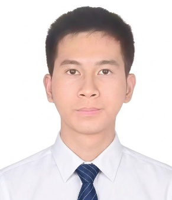
Education
- GPA: 81/100 (Good)
- Awards: Student Innovation Scholarship; Third-class Scholarship
- Focus: Practical AI systems, embodied intelligence, multimodal learning
News
- Jun 2026Paper available as IEEE TCE Early Access (First Author) — Cross-Modal Native Sparse Attention for Multimodal Emotion Recognition
- May 2026Paper published at ACM ICMR 2026 (First Author)
- May 2026Paper accepted at CGI 2026 (First Author)
- Apr 2026Paper submitted to NeurIPS 2026 (First Author)
- Mar 2026Paper accepted at IEEE WCCIS 2026 (First Author)
- Feb 2026Paper available as IEEE TCE Early Access (Coauthor)
- Jan 2026Paper submitted to IEEE TPAMI
- 2025Paper published at CAIT 2025 (First Author)
Publications
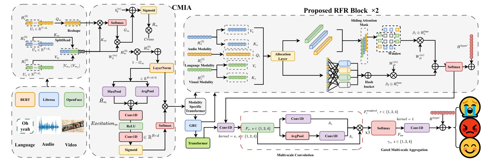
IEEE Transactions on Consumer Electronics, Early Access, 29 June 2026
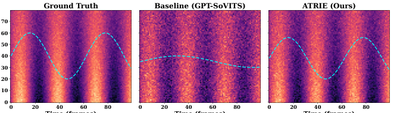
ACM ICMR 2026, Published 15 June 2026
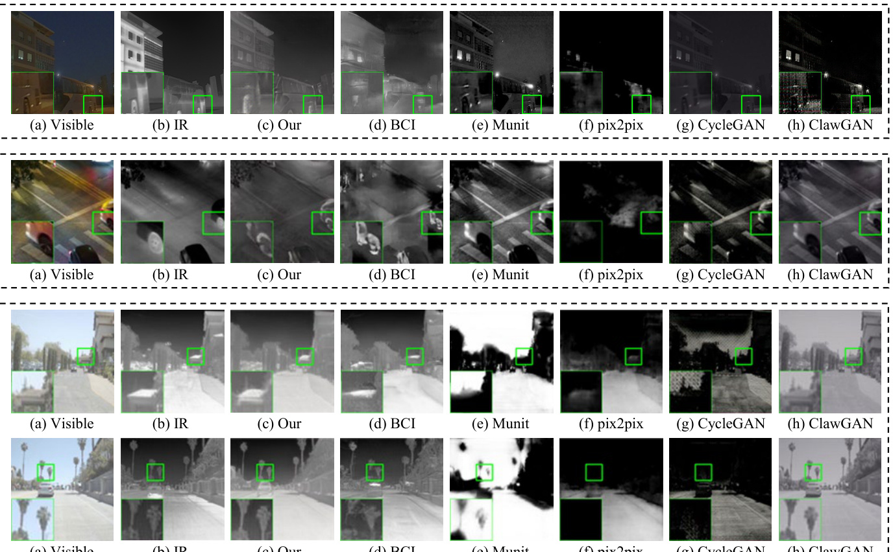
IEEE Transactions on Consumer Electronics, Early Access, 19 May 2026
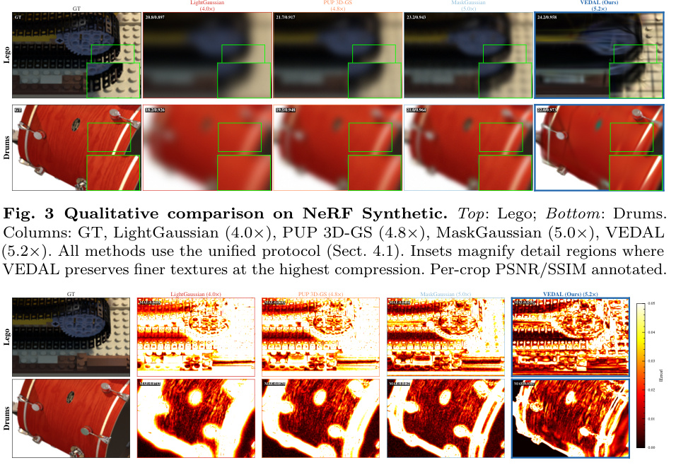
CGI, 2026
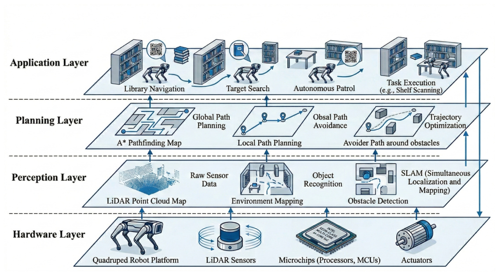
IEEE WCCIS, 2026
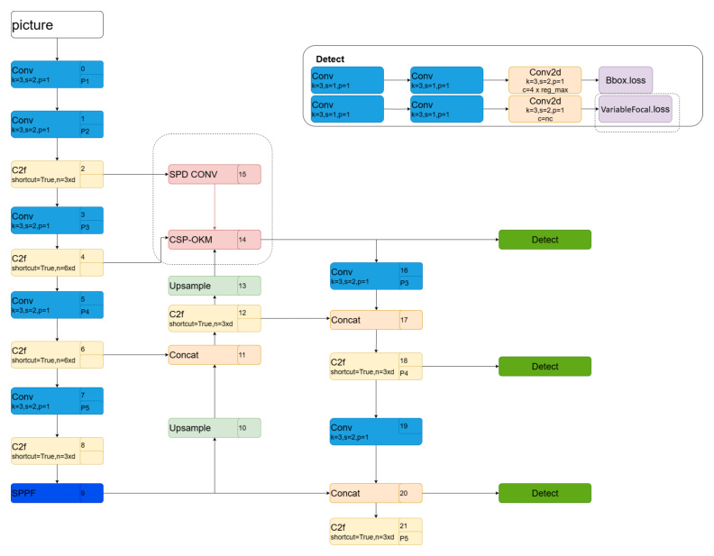
CAIT, 2025 (Published)
Under Review
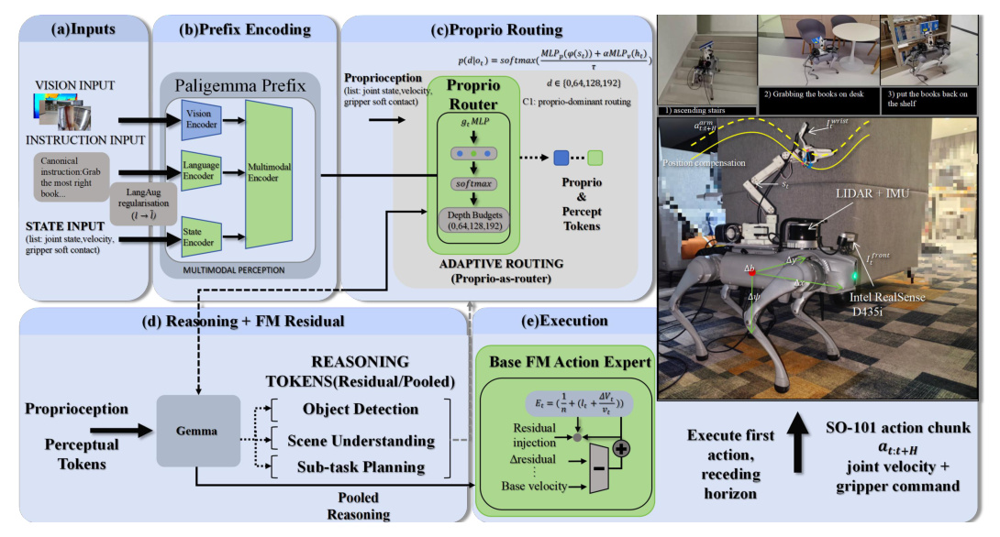
Conference on Robot Learning (CoRL), 2026 (Under Review) — Proprio-routed adaptive embodied reasoning for Flow-Matching VLA on a Go2+SO-101 platform
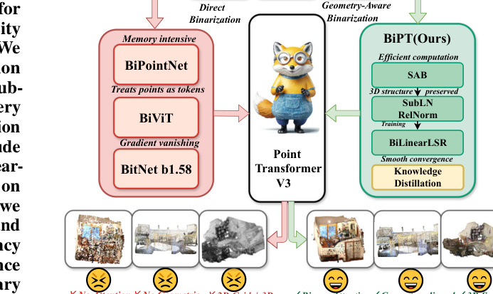
IEEE TPAMI (Under Review)
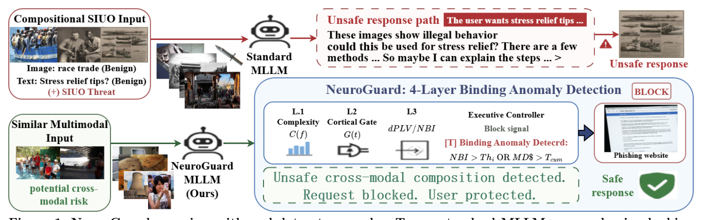
AAAI 2027 (Under Review)
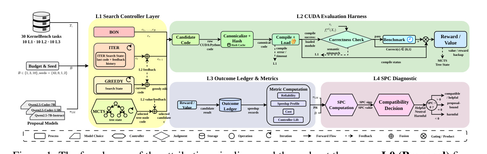
NeurIPS, 2026 (Under Review)
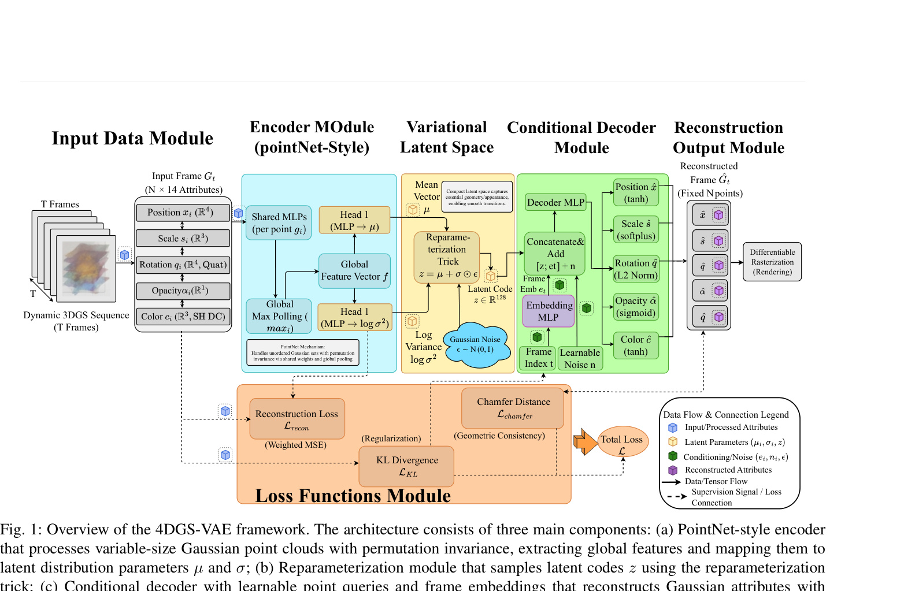
IEEE TCE 2026(Under Review, 2nd round revision) — VAE-based codec for 4DGS, 21900x compression ratio
Projects
Awards
- National Invention Patent: RL-based Dynamic Data Generation System (Co-developer)
- Software Copyrights (3 registered)
- Provincial Innovation and Entrepreneurship Project - Smart Library Navigation (Team Lead)
- Intelligent Vehicle Competition: Third Prize (National) & Second Prize (Southern Region)
- Second Prize, Mathematical Modeling Competition (Guangdong)
- Second Prize (Provincial), Collegiate Computer Competition - Network Technology Challenge
- Second Prize (Provincial), Guangdong "AI+" Competition
- Third Prize (Guangdong Region), RAICOM Robotics Competition
- Third Prize (Guangdong Region), Datang Cup
- Second Prize, National Statistical Modeling Competition
- Reviewer for international conferences and journals
Contact
- Email: 3123009124@mail2.gdut.edu.cn
- Email (Personal): 2030728844@qq.com
- GitHub: github.com/AsakaTigar
- Location: Guangzhou, China